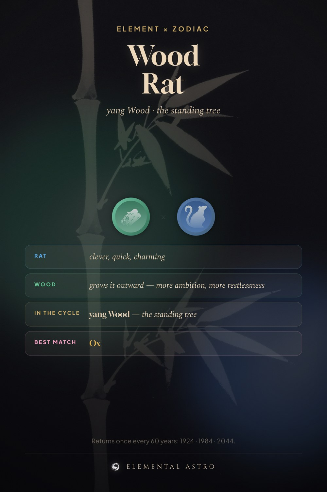

A Wood Rat is born in 1924, 1984 or 2044. The Rat brings clever, quick, charming. Wood grows it outward — more ambition, more restlessness. In the stem cycle this is yang Wood — the standing tree, not its opposite. Your steadiest match stays the Ox. Wood rat, rat personality by element, Chinese zodiac elements.
https://www.elementalastro.io/learn/element-zodiac/wood-rat